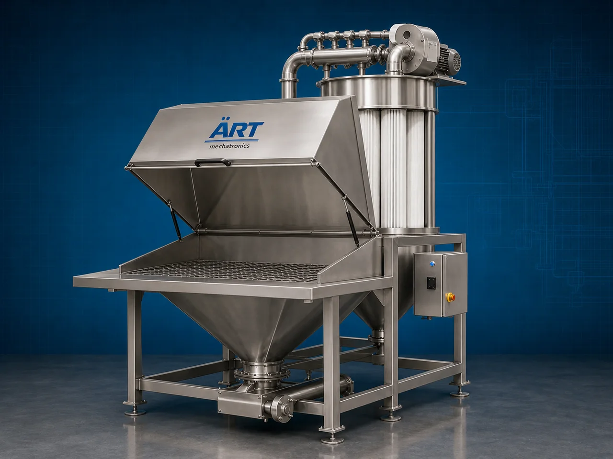

Bag Dump Station (Industrial Bag Unloading, Powder Handling & Feeding System)
A Bag Dump Station, also known as a Bag Unloading Station, Manual Bag Feeding Station, or Bulk Bag Dumping System, is an industrial material handling equipment designed for safe, dust-free unloading, emptying, feeding, and transfer of powders, granules, flakes, pellets, and bulk materials from bags into production or conveying systems.

About the Bag Dump Station
Bag dump stations are widely used for:
- Manual bag unloading
- Dust-free powder handling
- Bulk material feeding
- Process material transfer
- Conveyor feeding systems
- Industrial material handling automation
The machine improves:
- Workplace cleanliness
- Production efficiency
- Material handling safety
- Dust control
- Labor convenience
- Continuous process feeding
Industrial bag dump stations are manufactured using:
- Stainless steel construction
- Mild steel construction
- Integrated dust collection systems
- Food-grade hygienic designs
to ensure safe and efficient industrial powder handling operations.
Bag dump stations are widely used in industries such as:
Food processing industries
Spice industries
Pharmaceutical industries
Chemical industries
Flour mills
Feed industries
Mouth freshener & pan masala industries
Plastic industries
where safe, hygienic, and dust-free manual material unloading is essential.
The machine is highly suitable for:
- Powder unloading
- Spice feeding
- Flour handling
- Chemical powder transfer
- Granule feeding
- Bulk ingredient charging
ART Mechatronics offers high-performance bag dump stations, engineered for continuous industrial operation, dust-free material handling, hygienic feeding, and reliable long-term performance.
Working Principle of Bag Dump Station
Operator places powder or material bag onto bag dump station platform or grid
Bag is manually cut or opened and material is emptied into hopper section
Integrated dust extraction system controls airborne dust during dumping process.
Machine handles:
- Powders
- Flour
- Spices
- Granules
- Pellets
- Chemical powders
- Food ingredients while minimizing dust leakage and contamination.
Built-in dust collector or suction system captures: Fine dust particles Airborne powder Material spill dust to maintain clean working environment.
Material transferred using: Screw conveyors Pneumatic conveyors Vacuum conveyors Vibratory feeders Process hoppers
Material supplied continuously to downstream processing equipment automatically
Types of Bag Dump Stations
- 1. Dust Free Bag Dump Station
Designed for: ✔ Fine powder and dust-sensitive applications
- 2. Food Grade Bag Dump Station
Suitable for: ✔ Hygienic food and pharmaceutical operations
- 3. Integrated Conveyor Bag Dump Station
Uses: ✔ Screw or pneumatic conveyor feeding systems
- 4. Stainless Steel Bag Dump Station
Designed for: ✔ Corrosion-resistant hygienic operations
- 5. Heavy Duty Industrial Bag Dump Station
Suitable for: ✔ Large-scale industrial powder handling systems
- 6. Bulk Bag Dumping Station
Designed for: ✔ Jumbo bag and bulk sack unloading systems
Industries Using Bag Dump Stations
🌿 Mouth Freshener & Pan Masala Industry Supari powder, pan masala ingredients, and flavor handling systems 🌶️ Spice Industry Turmeric, chilli, cumin, coriander, and seasoning powder handling systems 🍃 Food Processing Industry Food ingredient unloading and feeding systems 🌾 Flour & Grain Industry Flour and grain powder charging systems 💊 Pharmaceutical Industry Hygienic powder unloading systems ⚗️ Chemical Industry Chemical powder and granule feeding systems 🐄 Feed Industry Animal feed ingredient handling systems ♻️ Plastic Industry Plastic granule and additive feeding systems
Features & Advantages
- Dust-free manual bag unloading system
- Improves workplace cleanliness and safety
- Efficient powder and granule handling
- Integrated dust extraction system
- Heavy-duty industrial construction
- Hygienic food-grade design options available
- Easy integration with conveyors and process equipment
- Low maintenance and easy cleaning system
- Continuous industrial operation support
Technical Highlights
Station Type: Manual bag dump station Dust-free unloading station Bulk bag dumping system Construction: Stainless Steel (SS304 / SS316) Mild Steel (MS) Dust Control: Integrated dust collector Filter system Suction blower arrangement Feeding System: Screw conveyor integration Pneumatic conveying integration Vibratory feeder integration Automation: Semi-automatic Fully automatic integrated systems
Turnkey Bag Dump Station Solutions
ART Mechatronics offers: Complete bag dump station systems Dust-free powder handling solutions Conveyor and hopper integration systems Bulk material feeding automation solutions Installation & commissioning After-sales service & AMC
Why Choose Art Mechatronics
Expertise in industrial powder handling systems Customized bag dump station solutions for multiple industries High-performance and durable industrial construction Hygienic and dust-free operation designs Proven industrial performance across sectors
Applications
Pan Masala Manufacturing Plants Spice Processing Industries Food Processing Plants Pharmaceutical Manufacturing Units Chemical Industries Feed Manufacturing Plants
Related Storage & Elevation machines
Get pricing & specs for the Bag Dump Station
Share the product, target capacity, current process and plant location. These details help our engineers discuss the right machine or line configuration.
One partner, from design to start-up
ART Mechatronics designs, manufactures, installs and commissions your Bag Dump Station solution with regional presence in India, UAE and Thailand.